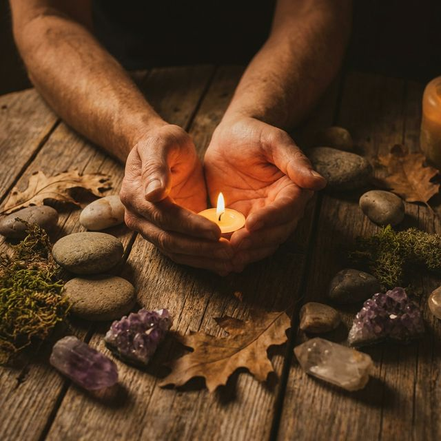

There are no hacks here. Only pause, presence, and roots.
🌿Natural Rituals
→
📝Intuitive Writing
→
🍲Functional Nourishment
→
🫱🏼🫲🏾Symbolic Gatherings
→
Reading Time: 15 Minutes
🌿 Natural Rituals: The Art of Rooting
We are not separate from nature; we are nature. The modern illness is often a result
of severing this connection. Rituals are the bridge back. They are not "tasks" to complete, but
moments to anchor your nervous system.
Ritual 1: Earthing (Grounding)
The Earth is a giant battery. It carries a subtle, negative electrical charge. Our bodies, due to
stress and inflammation, often carry a positive charge (free radicals). When you touch the
earth, you discharge.
The Protocol:
Remove shoes and socks. Synthetic rubber soles block the electron transfer.
Find grass, soil, sand, or unsealed concrete. (Wood and asphalt do not conduct well).
Stand or sit for 20 minutes.
Visualization: Imagine roots growing from your heels, deep into the magma of
the Earth. Inhale red energy from the earth; exhale gray smoke (stress) back down.
🔬 The Science of Electrons: Peer-reviewed studies show that Earthing shifts
the autonomic nervous system from sympathetic (fight-or-flight) to parasympathetic
(rest-and-digest) within minutes. It consistently reduces blood viscosity (thinning the blood)
and lowers cortisol levels.
Ritual 2: Solar Gazing (Sanity Maintenance)
Light is the primary "zeitgeber" (time-giver) for your biology. Your hormones wait for a light
signal to know what to do.
The Protocol:
Morning (First 30 mins): View morning light to trigger Cortisol
(energy) and set the timer for Melatonin (sleep) 12-14 hours later.
Evening (Sunset): View the fading light. The specific wavelengths of
sunset lower cortisol and prepare the body for restoration.
Ritual 3: Shinrin-yoku (Forest Bathing)
A Japanese practice of "taking in the forest atmosphere." Trees release volatile organic
compounds called phytoncides to protect themselves from rot and insects. When we breathe these
in, our bodies increase the number and activity of Natural Killer (NK) cells.
The 5-Senses Walk:
Walk slowly. Stop often. Engage your senses one by one:
Sight: Notice the fractals in the leaves.
Sound: Hear the crunch of leaves or bird song.
Smell: Inhale the pine/damp earth scent (geosmin).
Touch: Place a hand on the rough bark of a tree.
Taste: Taste the air.
Can I do Earthing in winter?
Yes, but be safe. Even 2 minutes in the cold can be invigorating. Alternatively, use a grounding
mat connected to the ground port of an electrical outlet.
What if I live in a city?
Find a park. Even a small patch of grass works. Or keep houseplants—touching the soil of a potted
plant connects you to its microbiome, if not the Earth's electrical field directly.
Reading Time: 18 Minutes
📝 Intuitive Writing: Emotional Digestion
Writing is a form of metabolism. Just as your gut digests food, your psyche must
digest experiences. If you don't "digest" your emotions, they remain stuck in the body as tension,
anxiety, or numbness. This module is your digestive aid.
Practice 1: The "Psychic Drain" (Morning Pages)
The goal is not to write something "good." The goal is to clear the "mental throat" so the real voice
can speak.
The Protocol:
Tools: Analog only. Pen and paper. No screens.
Volume: 3 pages (A4 or Letter), strictly.
Content: Stream of consciousness. Whining, complaints, grocery lists, "I'm
tired," "I hate this pen."
The Rule: Do NOT stop moving the pen. If you have nothing to say, write "I
have nothing to say" until a new thought arrives.
Why it works: The first 1.5 pages are usually superficial defense mechanisms. The "real
stuff"—the creative insights and hidden fears—usually hides on page 3.
Practice 2: Shadow Work Prompts
The "Shadow" is the part of us we hide, deny, or reject. It is not necessarily "evil"; it is just
hidden. Reclaiming it liberates massive amounts of energy.
Weekly Prompts:
"What trait do I judge most harshly in others?" (This is often a trait you possess
but suppress).
"Where in my life am I playing the victim?" (Be brutally honest. Where are you
giving away your power?).
"If I were guaranteed not to fail, what would I start today?"
"What is the lie I am telling myself to keep the peace?"
Practice 3: The Burn Letter (Release)
For anger, grief, or resentment that feels "stuck."
Protocol:
Address the letter to the person (or situation) you are angry at.
Write with zero filter. Curse, scream on the page. Say the things you typically "shouldn't"
say. Get the poison OUT.
CRITICAL: Do not send it. DO not re-read it.
Take it to a safe place (sink, fire pit) and burn it. Watch it turn to ash.
Wash your hands with cold water. It is done.
Reading Time: 20 Minutes
🍲 Functional Nourishment: Eating as Prayer
Food is not just fuel; it is information. Every bite sends a signal to your genes,
telling them to express health or inflammation. Here, we restore the sanctity of the meal.
Concept 1: The "High Vibration" Ingredient List
We focus on "Single Ingredient Foods"—foods that didn't need a factory to create.
Greens (Expansive): Kale, Chard, Spinach, Fresh Herbs. (Good for
stagnation).
Fats (Protective): Avocado, Ghee, Olive Oil, Coconut Oil. (Good for nervous
system repair).
Concept 2: The Cephalic Phase (Digestion begins in the Mind)
If you eat while stressed or scrolling, your body is in sympathetic mode. Blood is in your limbs, not
your stomach. You will be bloated.
The Pre-Eating Ritual (30 Seconds):
Sit down. Feet flat on the floor.
Look at your food. Acknowledge the life effectively sacrificed for you to live (plant or
animal).
Take 3 deep breaths. Inhale through nose, exhale through mouth.
Gratitude: "Thank you to the earth, sun, and rain."
Eat the first bite with your eyes closed.
Recipe: The "Golden Root" Grounding Stew
A medicine meal for when you feel unmoored or physically cold.
Ingredients:
1 tbsp Coconut Oil
1 Onion (diced)
3 cloves Garlic (minced)
1 tbsp Fresh Ginger (grated)
1 tbsp Fresh Turmeric (grated)
2 large Sweet Potatoes (cubed)
1 Cup Red Lentils (rinsed)
4 Cups Vegetable Broth
1 Can Full-Fat Coconut Milk
Spinach (added at end)
Method: Sauté onion/garlic/ginger/turmeric until fragrant. Add potatoes and
lentils. Add broth. Simmer 20 mins until soft. Stir in coconut milk. Turn off heat. Stir in
spinach until wilted. Serve with lime juice.

Reading Time: 12 Minutes
🫱🏼🫲🏾 Symbolic Gatherings: The Medicine of Community
We are wounded in relationships, and we heal in relationships. Isolation is the
enemy of mental resilience. Aurora Nativa is your "Third Place"—a space that is neither work nor
home, but community.
The Lost Art of "The Circle"
In a hierarchy (pyramid), people look up or down. In a circle, everyone is equal. There is no head of
the table. We see every face.
The Listening Protocol (Council):
When you gather with friends or in our virtual circles, practice this ancient technology:
The Centerpiece: Place a candle or flower in the center. This holds the
focus.
The Talking Piece: Only the person holding the object (stone, stick, pen)
may speak.
No Cross-Talk: When someone shares a pain, we do NOT say "Have you tried
X?" or "Oh, me too." We simply listen. We offer presence, not solutions.
Confidentiality: "What is said in the circle, stays in the circle."
Ritual: The New Moon Intention
The New Moon is the cosmic time of "planting seeds" (darkness/germination).
Gathering Format:
Gather 2-3 trusted friends (or do this solo).
Light a candle. Close eyes. Take 3 breaths together.
Share: "What am I ready to let go of from the last cycle?"
Share: "What am I calling in for this new cycle?"
Write the intentions down. Speak them aloud: "I call in..."
Finding Your Pod
You are encouraged to find 2-3 "Accountability Hearts" within the community. These are people you
check in with, not about goals/productivity, but about state of being: "How is your heart today?"
I feel shy/introverted. Is this for me?
Circles are perfect for introverts because there is no "small talk." You speak your truth when it
is your turn, and the rest of the time you have permission to be quiet and listen.